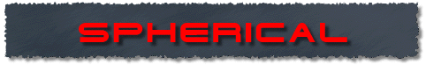
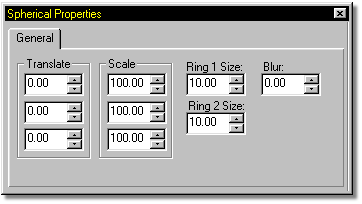
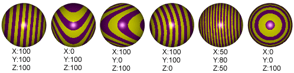
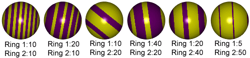
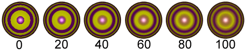

you wish to change and select
The Spherical combiner has it's own set of adjustable attributes.

The spherical texture occupies a 3-D space. The X, Y & Z Translation values allow you to move the texture through this space.

Examples of Spherical Scaling
The spherical texture can be scaled in any of the three directions by entering values in the X, Y & Z Scale parameters. If any of the axis are set to "0", that axis degenerates to layered cylinders, much like the rings in trees.

Example Spherical Ring Sizes
The spheres thickness between the alternating materials can be changed by using the Ring 1 Size and Ring 2 Size parameters, meaning each attribute layer can have a difficult thickness.

Example Spherical Blur Values
The default blur for spherical is none, giving the texture hard edges. The higher the blur value, the more smeared the edges of the spherical texture gets.
Related Topics:
About Materials
Attributes
Turbulence
Checker Combiner
Gradient Combiner
Noise Combiner